ECB staff macroeconomic projections for the euro area, September 2022
Overview
In spite of better than expected economic growth in the first half of 2022, related to the effects of the reopening of the economy and a strong rebound in tourism, the economic consequences of the war in Ukraine continue to unfold and darken the outlook for the euro area economy while pushing up inflationary pressures further.[1] Disruptions to natural gas supplies coupled with skyrocketing gas and electricity prices have increased uncertainty, severely hit confidence and led to increasing losses in real income that are expected to lead to a stagnation of the euro area economy in the second half of 2022 and the first quarter of next year. The uncertainty surrounding both the short and the medium-term outlook remains at high levels. The staff projections rest on the assumptions that gas demand will be tempered by high prices and precautionary energy saving measures (following the recent EU agreement to reduce gas demand by up to 15%) and that no major rationing of gas will be needed. Nevertheless, some production cuts are assumed to be necessary in the winter in countries that are heavily dependent on imports of Russian natural gas and at risk of a shortfall in supply. Although supply bottlenecks have recently eased somewhat faster than had been expected, they are still weighing on activity and are assumed to dissipate only gradually. Over the medium term as the energy market rebalances, uncertainty declines, supply bottlenecks are resolved and real incomes improve, growth is expected to rebound, despite less favourable financing conditions. The labour market is expected to weaken following the slowdown in economic activity, though remaining overall rather resilient. Overall, annual average real GDP growth is expected to stand at 3.1% in 2022, to slow down markedly to 0.9% in 2023 and to rebound to 1.9% in 2024. Compared with the June 2022 Eurosystem staff projections, the outlook for GDP growth has been revised up by 0.3 percentage points for 2022, following positive surprises in the first half of the year, and revised down by 1.2 percentage points for 2023 and by 0.2 percentage points for 2024, mainly owing to the impact of energy supply disruptions, higher inflation and the related fall in confidence.
Inflation continues to surge on the back of further large supply shocks, which are feeding through to consumer prices at a faster pace than in the past. Headline HICP inflation is expected to stay above 9% for the rest of 2022 owing to extremely elevated energy and food commodity prices, as well as upward pressures from the reopening of the economy, supply shortages and tight labour markets. The expected decline in inflation from an average of 8.1% in 2022 to 5.5% in 2023 and 2.3% in 2024 mainly reflects a sharp decline in energy and food price inflation as a result of negative base effects and an assumed decline in commodity prices, in line with futures prices. HICP inflation excluding energy and food is seen to remain at unprecedented high levels until the middle of 2023 but is also expected to decline thereafter as the effects of the reopening of the economy subside and as supply bottlenecks and energy input cost pressures ease. Headline inflation is expected to remain above the ECB’s target of 2% in 2024. This is due to lagged effects from high energy prices on the non-energy components of inflation, the recent depreciation of the euro, robust labour markets and some effects of inflation compensation on wages, which are expected to grow at rates well above historical averages. Compared with the June 2022 Eurosystem staff projections, headline inflation has been revised up substantially for 2022 (by 1.3 percentage points) and 2023 (2.0 percentage points), and slightly for 2024 (0.2 percentage points), reflecting recent data surprises, dramatic increases in the assumptions for wholesale gas and electricity prices, stronger wage growth and the recent depreciation of the euro. These effects more than offset the downward impact of the recent decline in food commodity prices, less severe than previously assumed supply bottlenecks and the weaker growth outlook.
Table
Growth and inflation projections for the euro area
(annual percentage changes)
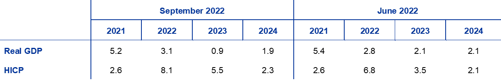
Notes: Real GDP figures refer to seasonally and working day-adjusted data. Historical data may differ from the latest Eurostat publications due to data releases after the cut-off date for the projections.
The uncertainty surrounding the staff projections is especially pronounced. In particular, in the short term, inflation developments strongly hinge on developments in energy commodity prices, which have recently been very volatile, especially in the case of gas and electricity wholesale prices. A key risk to the euro area outlook relates to the possibility of more severe disruptions to European energy supplies, combined with a cold winter implying higher demand for heating, leading to further spikes in energy prices and more severe production cuts than featured in the baseline. A downside scenario reflecting these risks suggests inflation would average 8.4% in 2022, 6.9% in 2023 and 2.7% in 2024. Real GDP would grow by 2.8% this year and contract by 0.9% in 2023 before recovering by 1.9% in 2024. This scenario is described in more detail in Box 3.
1 Real economy
The euro area economy registered robust growth in the first half of 2022, markedly above the level foreseen in the June 2022 Eurosystem staff projections, in spite of the war in Ukraine (Chart 1). Growth in the first quarter was supported by a very strong net trade contribution which partly relates to the activity of multinational enterprises in Ireland. In the second quarter manufacturing benefited from an easing of supply bottlenecks, while services production was boosted by the lifting of pandemic-related restrictions which supported in particular the contact-intensive part of the services sector, including tourism.
Chart 1
Euro area real GDP growth
(quarter-on-quarter percentage changes, seasonally and working day-adjusted quarterly data)
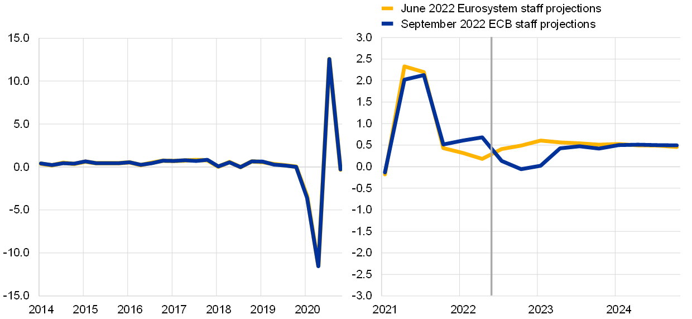
Notes: Historical data may differ from the latest Eurostat publications due to data releases after the cut-off date for the projections (see footnote 1). The vertical line indicates the start of the current projection horizon.
Real GDP growth is expected to slow down significantly in the third quarter of the year as inflation takes a toll on real incomes and uncertainty and rising interest rates hold back investment. Strong activity in the tourism and travel sectors coupled with a further easing of supply bottlenecks should support growth in the third quarter. At the same time, survey indicators, such as the Purchasing Managers’ Index, point to a contraction in both the manufacturing and services sectors in August 2022. The negative shock to real disposable income owing to rising prices is also expected to weigh on activity. Uncertainty, in particular related to gas supply disruptions (see below), together with sharp increases in bank lending rates, is also constraining economic activity. Overall, quarter-on-quarter growth in the third quarter is expected to stand at 0.1% (a downward revision of 0.3 percentage points compared with the June projections).
Headwinds are set to build up further and to be compounded over the next few months by disruptions to natural gas supplies. For the purpose of assessing the potential impact on production from disturbances in the gas market, ECB staff has assumed that both flows from Russia and flows from other suppliers will stay at the levels prevailing at the cut-off date for the September projections.[2] On the demand side, countries are assumed to implement the – so far voluntary – EU agreement to reduce natural gas usage by up to 15%,[3] and weather conditions in the coming winter are assumed to be in line with the average of the last five years. Under these assumptions, gas storage levels in the euro area would be somewhat below historical average levels overall – and significantly below those levels in countries most dependent on Russian gas supplies, notably Germany.[4] The economic impacts are therefore expected to be heterogenous across countries, with elevated uncertainty leading to precautionary gas saving measures and production cuts in Germany, and smaller negative effects owing to more limited measures to reduce demand in other countries. In addition, economic growth in all euro area countries is expected to be reduced as a result of the extremely high gas prices, which will render some activities unprofitable in the most gas-intensive sectors, leading to production being suspended in some cases. Overall, real GDP is expected to contract by 0.1% in the last quarter of 2022 and remain flat in the first quarter of 2023.
Beyond the near term growth is expected to pick up after the headwinds weighing on activity during the 2022-23 winter dissipate; however, the level of GDP is projected to stand below that foreseen in the June 2022 projections in 2024. The expected improvement is based on the assumption that gas supply disruptions cease to be a binding constraint on activity as the weather warms and alternative supplies are gradually phased in. Real GDP growth is projected to recover in the course of 2023 on account of several factors: abating inflationary pressures put less downward pressure on real disposable income; remaining supply bottlenecks unwind; foreign demand recovers; and export price competitiveness improves against key trading partners such as the United States. The negative impacts of weaker confidence and increased uncertainty, which foster precautionary motives in the short term, should also fade over the medium term. After the sizeable support provided by governments throughout the coronavirus (COVID-19) crisis and recovery measures over 2020-21, higher expected investment in 2022 funded by the Next Generation EU (NGEU) programme and, more recently, the increased support related to energy and the war in Ukraine, fiscal policy is expected to have a negative impact on growth in 2023, as some of these measures are withdrawn (see Section 2).[5] Overall, given the downgraded short-term outlook, and only a partial rebound over the medium term, real GDP is expected to remain below its previously envisaged path over the projection horizon (Chart 2).
Chart 2
Euro area real GDP
(chain-linked volumes, Q4 2019 = 100)
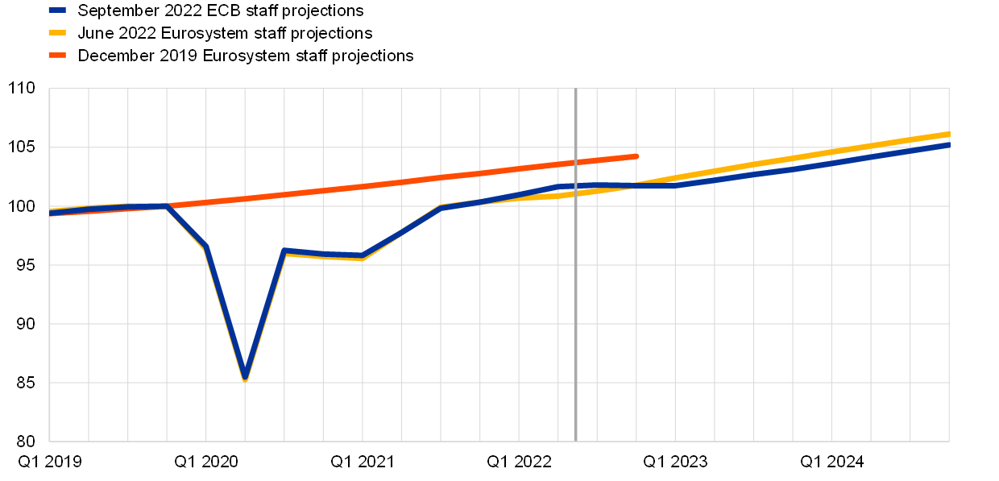
Notes: Data are seasonally and working day-adjusted. Historical data may differ from the latest Eurostat publications due to data releases after the cut-off date for the projections. The vertical line indicates the start of the current projection horizon.
Table 1
Macroeconomic projections for the euro area
(annual percentage changes, unless otherwise indicated)
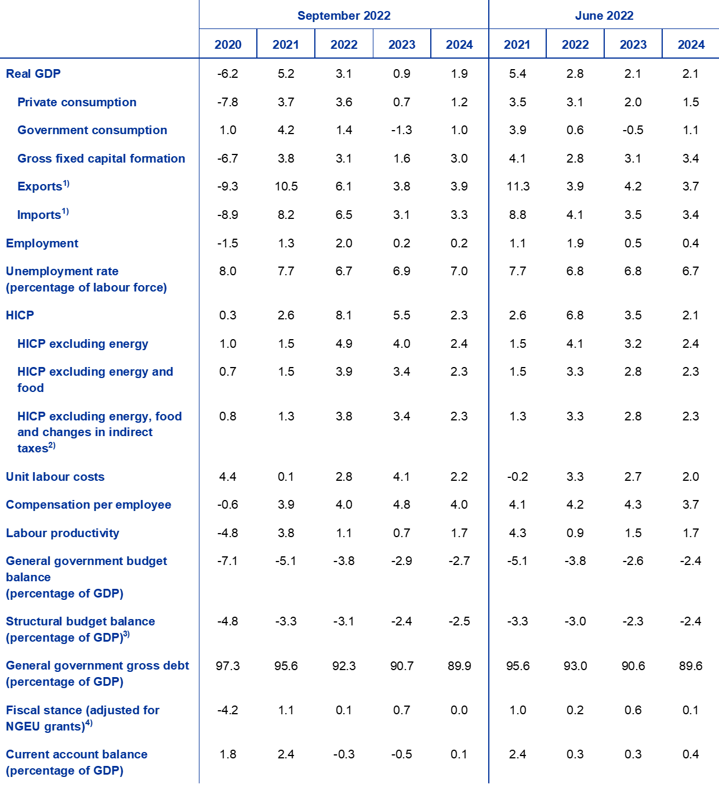
Notes: Real GDP and components, unit labour costs, compensation per employee and labour productivity refer to seasonally and working day-adjusted data. Historical data may differ from the latest Eurostat publications due to data releases after the cut-off date for the projections.
1) This includes intra-euro area trade.
2) The sub-index is based on estimates of actual impacts of indirect taxes. This may differ from Eurostat data, which assume a full and immediate pass-through of indirect tax impacts to the HICP.
3) Calculated as the government balance net of transitory effects of the economic cycle and measures classified under the European System of Central Banks definition as temporary.
4) The fiscal policy stance is measured as the change in the cyclically adjusted primary balance net of government support to the financial sector. The figures shown are also adjusted for expected NGEU grants on the revenue side. A negative figure implies a loosening of the fiscal stance.
Turning to the components of GDP, private consumption will weaken in the next few quarters but remain a key driver of the rebound in activity over the medium term. Private consumption rebounded in the second quarter of 2022, with the relaxation of COVID-19-related restrictions and a resurgence of spending on contact-intensive services, including an earlier and very dynamic start to the summer tourism season. With restrictions largely lifted, the potential for the effects of the reopening of the economy to support private consumption growth further is assessed to be limited. High inflation is deterring consumers from spending and forcing lower-income households in particular to cut their current savings flows. Beyond the short term, with the expected decline in inflation and decreasing uncertainty, private consumption is set to recover somewhat, but to grow slightly slower than real income.
High inflation will imply a contraction in real disposable income in both 2022 and 2023, despite continued resilience of the labour market and associated labour income. While the labour market is projected to weaken in the wake of the expected slowdown in economic activity, it is seen to remain resilient overall, with some of the adjustment assumed to take place via fewer hours worked per person employed, and only to some extent via an increase in unemployment. Real disposable income is estimated to have declined in the first half of 2022, mainly on the back of higher inflation but also lower net fiscal transfers owing to the withdrawal of COVID-19 support measures – albeit partly offset by energy-related compensatory measures. Real disposable income is expected to continue to decline until the first quarter of 2023 and then to recover somewhat towards the end of the projection horizon.
The household saving ratio should continue to decline as real incomes fall, reaching its pre-pandemic level in late 2022 before recovering slightly in 2024. The saving ratio is likely to have fallen sharply in the first half of 2022, and by more than previously expected, as consumers’ saving behaviour normalised with the relaxation of the pandemic-related restrictions and as savings helped to partly cushion the blow from exceptionally high inflation. A further decline in the saving ratio is expected in the coming quarters, particularly as households in lower-income groups, with relatively small amounts of past savings, might need to cut savings flows to finance their essential consumption. These households are very exposed to energy and food price shocks, despite benefiting from fiscal income support measures. Wealthier and older households might use the savings they accumulated during the pandemic[6] to smooth their consumption amid high inflation, although the purchasing power of these savings is projected to be heavily eroded by inflation, which will progressively reduce their buffering role. In 2024, as inflation converges back towards target, the saving ratio will start to increase again, albeit remaining below pre-pandemic levels.
Box 1
Technical assumptions about interest rates, commodity prices and exchange rates
Compared with the June 2022 Eurosystem staff projections, the technical assumptions include higher interest rates, somewhat lower oil prices, significantly higher wholesale gas and electricity prices and a depreciation of the euro. The technical assumptions about interest rates and commodity prices are based on market expectations with a cut-off date of 22 August 2022. Short-term interest rates refer to the three-month EURIBOR, with market expectations derived from futures rates. The methodology gives an average level for these short-term interest rates of 0.2% in 2022, 2.0% in 2023 and 2.1% in 2024. Market expectations for euro area ten-year nominal government bond yields imply an average annual level of 1.6% for 2022, gradually increasing over the projection horizon to 2.2% for 2024.[7] Compared with the June 2022 projections, market expectations for short-term interest rates have been revised up by around 20, 70 and 50 basis points for 2022, 2023 and 2024 respectively, on the back of expectations of a global tightening of monetary policy. This has also led to an upward revision of long-term sovereign bond yields of around 20 basis points across the projection horizon.
The technical assumptions for oil prices have been revised down owing to weaker demand and rising supply. The European Union has imposed a partial embargo on Russian crude oil and petroleum products, as well as a ban on shipping insurance for oil exports from Russia, which will enter into force by the end of the year. So far, although Russia’s oil exports to western countries declined by 1.3 million barrels per day in July compared with the average for 2021, Russia has succeeded in rerouting those oil flows towards Asia. Further substantial declines in Russian oil flows are anticipated by the start of 2023. By the cut-off date of the projections the upward pressure on oil prices from risks related to Russian oil supplies had been more than offset by increases in world oil production, with OPEC+ oil production now close to pre-pandemic levels, and lower expected oil demand in line with the worsening global economic outlook. Accordingly, the price of a barrel of Brent crude oil, based on futures prices averaged over the three working days preceding the cut-off date, is assumed to decline from USD 105.4 in 2022 to USD 83.6 in 2024.
Wholesale gas and electricity prices continue to skyrocket, while food commodity prices have declined. The tensions related to Russian gas supplies to Europe have intensified since the end of July when Gazprom reduced its gas flows through the Nord Stream 1 pipeline to only 20% of its usual volumes, bringing overall gas deliveries from Russia down by around 80%. Efforts by the EU to substitute Russian gas by tapping global gas markets as well as fears of a total shut-off of Russian gas flows has sent gas prices surging, with the Dutch TTF price trading above €270 per MWh in mid-August. The gas futures curve has shifted strongly upwards since the June projections (by 137% for the second half of 2022, 191% for 2023 and 163% for 2024), but remains in backwardation. Wholesale electricity price futures, which act as a guide for projections, have also been revised up substantially and point to persistently high price levels. The impact of alternative energy price assumptions to those included in the baseline projection is reflected in a sensitivity analysis in Box 4. EU Emissions Trading Scheme allowances per tonne are assumed, based on futures prices, to stand at €87.0 in 2022, €93.9 in 2023 and €97.7 in 2024. Prices of non-energy commodities in US dollars are expected to rise in 2022 and to decrease in 2023-24, and have been revised down compared with the June 2022 projections, driven in particular by a decline in food commodity prices.
Bilateral exchange rates are assumed to remain unchanged over the projection horizon at the average levels prevailing in the three working days ending on the cut-off date. This implies an average exchange rate of USD 1.05 per euro in 2022 and USD 1.01 per euro in 2023-24, which is around 4% lower than in the June 2022 projections. The assumption for the effective exchange rate of the euro implies a depreciation of 2% compared with the June 2022 projections.
Table
Technical assumptions
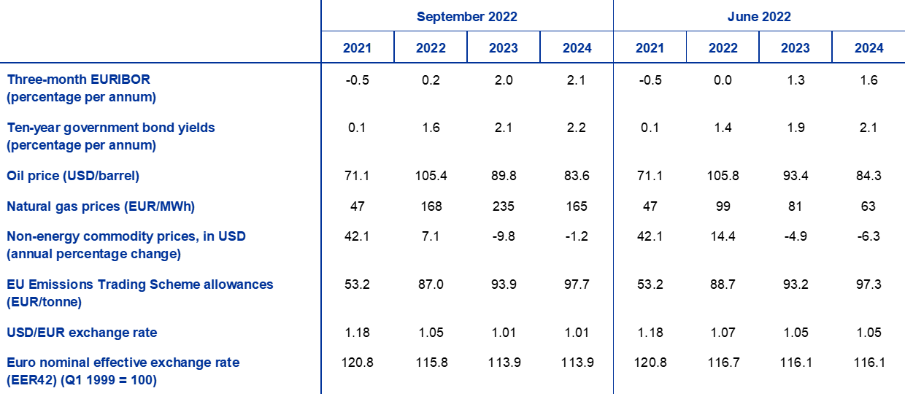
Housing investment is projected to contract slightly owing to deteriorating financing conditions and persistent uncertainty. Housing investment is estimated to have already contracted in the second quarter of 2022, as Russia’s war in Ukraine exacerbated shortages of labour and raw materials. In the short term the notable increase in mortgage rates and persistent uncertainty related to energy and the war are projected to weigh on housing investment, inducing a protracted decline from the second half of 2022 to the end of 2023. Thereafter housing investment growth is expected to be very subdued over the remainder of the projection horizon, as financing conditions deteriorate further on the back of the continuing normalisation of interest rates, offsetting the impacts of positive Tobin’s Q[8] effects and rising disposable income.
Business investment is expected to decline in the short term, constrained by higher costs of financing, elevated uncertainty and increasing energy prices, but to recover as headwinds ease. After positive underlying developments in the first half of 2022, as suggested by incoming data, survey indicators point to flat or even declining investment activity in the second half of the year. Although surveys still suggest that capital goods manufacturers face relatively strong demand, ongoing rises in interest rates, the uncertainty related to the war in Ukraine and higher energy prices have led to falling business confidence and lower expectations for business activity in the capital goods sector. These factors and the assumed gas supply constraints will act as a drag on investment growth in the short term. Investment is expected to pick up after the winter of 2022-23, under the assumption that supply bottlenecks and gas supply constraints continue to ease and uncertainty subsides. In the medium run a positive impact is expected from the NGEU programme crowding in private investment, although the programme implementation has been delayed for the next few quarters for some countries. Investment will also be supported by the need for high capital expenditure related to the decarbonisation of the European economy, including in the context of the process of transitioning away from dependency on Russian energy supplies (in line with the REPowerEU proposal).
Box 2
The international environment
The world economy is slowing down as high inflation, tighter financial conditions and remaining supply-related headwinds take their toll on economic activity. The war in Ukraine has pushed energy commodity prices higher and disrupted global food supply chains, fuelling inflationary pressures worldwide and raising concerns about global food security. While a sustained easing of pandemic-related restrictions since the spring across major advanced economies has helped to support consumption in the travel and hospitality services sectors, exceptionally strong inflationary pressures, which required central banks to tighten monetary policy, are weighing on disposable income and savings accumulated during the pandemic.
The global growth outlook is rather subdued with global real GDP (excluding the euro area) projected to grow by 2.9% in 2022, by 3.0% in 2023 and by 3.4% in 2024. Overall, the global economy is expected to grow at a rate slightly below its long-term average this year and next year as economic growth slows down across advanced and emerging market economies. Compared with the June 2022 projections, global real GDP growth (excluding the euro area) has been revised down by 0.1 percentage points in 2022, 0.4 percentage points in 2023 and 0.2 percentage points in 2024. A worsening outlook for the United States and China explains the bulk of the downward revisions to growth over the projection horizon. In the United Kingdom, the sharp rise in energy prices is expected to significantly weigh on activity, which is projected to decline at the turn of the year. The downward revisions to growth for this year are partly compensated for by a somewhat milder than previously expected recession in Russia, which has proven so far more resilient to economic sanctions, and stronger than previously expected activity in some large emerging market economies, such as Brazil, Mexico and Turkey.
In line with global growth, the global trade outlook has also deteriorated. Weakening activity in global manufacturing is weighing on trade, which had already started to decelerate in spring 2022, as evidenced by the slowing momentum in goods trade. Prospects for global trade have deteriorated as suggested by survey data on new export orders in manufacturing, which remained in contractionary territory in August. A weaker demand outlook and improved supply have helped to alleviate supply chain pressures, which, however, still persist. As a result, global trade (excluding the euro area) is expected to grow by 4.6% in 2022, by 2.7% in 2023 and by 3.4% in 2024, while euro area foreign demand is expected to be somewhat weaker, especially in 2023. Compared with the June 2022 projections, the outlook for global trade and for euro area foreign demand has been revised down for the later years of the projection horizon. For this year, however, both have been revised up thanks to stronger than previously expected trade dynamics across advanced economies in early 2022, especially in the United Kingdom and European countries outside the euro area.
Global inflationary pressures remain broad and elevated amid commodity price spikes, remaining supply constraints, still relatively robust demand and tight labour markets, but are expected to decline as commodity markets stabilise and growth weakens. Headline inflation in OECD countries declined slightly to 10.2% in July 2022 from 10.3% in June, as an increase in core inflation was more than compensated for by a lower contribution from energy and food inflation. Global inflation is expected to remain elevated in the near term, driven by high commodity prices as well as strong domestic and global pipeline pressures amid tight global labour markets. However, the assumed decline in commodity prices in line with their futures, as well as the deterioration in global growth, is projected to dampen inflationary pressures in the medium term.
Table
The international environment
(annual percentage changes)
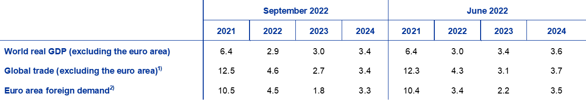
1) Calculated as a weighted average of imports.
2) Calculated as a weighted average of imports of euro area trading partners.
An easing of supply bottlenecks and the depreciation of the euro are seen to underpin extra-euro area exports in 2022, while a slowing global economy is expected to weigh on euro area trade in 2023. High-frequency data and forward-looking indicators point to some easing of supply bottlenecks in the second quarter of 2022, following the historical peak of equipment shortages and ocean freight shipping costs reached in the first quarter. After a temporary increase in March and April owing to the war in Ukraine, suppliers’ delivery times fell faster than expected in the summer. The easing of supply bottlenecks and the depreciation of the euro are expected to support extra-euro area exports in 2022, despite weak foreign demand. However, the slowdown of the global economy (see Box 2) is predicted to weigh on trade in 2023. Overall, export growth has been revised up for 2022 and down for 2023. Solid economic activity in the first half of 2022 is expected to push up extra-euro area import volumes. Net exports are expected to make a neutral contribution to GDP growth in 2022 but to contribute positively in 2023 and 2024. However, the euro area current account is not expected to recover by the end of the projection horizon; this is due to energy prices, especially gas prices, which are expected to remain persistently high despite some moderation from current levels. The strong increase in energy prices since the June projections implies a further large deterioration in the euro area terms of trade and the trade balance, both of which are expected to improve only from 2023.
The labour market is expected to weaken following the slowdown in economic activity, though remaining overall still rather resilient. Following an increase of 0.4% in the second quarter of 2022, supported by the positive effects of the reopening of the economy after the COVID-19 pandemic, total employment stands at a level similar to the level predicted by its historical relationship with GDP. Employment growth is projected to be lower during the second half of 2022, given lower labour demand in the wake of supply bottlenecks, high inflation, and heightened uncertainty. Over the medium term it is projected to be 0.2% in both 2023 and 2024. Although in the short term firms can be expected to make use of labour hoarding, including through reducing the number of hours worked, some layoffs are expected later in the cycle. As a result, after declining to 6.6% in the second quarter of 2022 the unemployment rate is expected to slowly increase, reaching 7.0% in 2024. Productivity per person employed is expected to drop sharply from 3.8% in 2021 to 1.1% in 2022 and 0.7% in 2023. It should recover in 2024 to stand at 1.7%, partly owing to compositional effects as layoffs will affect less productive workers.
Compared with the June 2022 projections, real GDP growth has been revised up by 0.3 percentage points for 2022 but down by 1.2 percentage points for 2023 and by 0.2 percentage points for 2024. The upward revision for 2022 reflects stronger than expected growth momentum in the first half of the year that is partly offset by the downward revision to growth in the second half, stemming from elevated uncertainty, falling confidence, higher inflation compressing real incomes, and natural gas supply disruptions in the context of the war in Ukraine. These factors also explain a rather strong downward revision to growth in the first quarter of 2023. Quarterly GDP growth is seen to start to recover from the second quarter of 2023, although at a slower pace than expected in the June projections. The slight downward revision for 2024 reflects the persistent nature of the shocks behind the downward revisions for the previous year which prevents a quicker rebound in activity.
Box 3
A downside scenario related to the war in Ukraine and energy supply cuts
Given the ongoing uncertainty surrounding the economic outlook for the euro area on account of Russia’s war in Ukraine, this box presents a downside scenario. It entails a complete cut-off of Russian gas as well as seaborne oil flows into the euro area, with little scope for accessing alternative gas supply sources. It also assumes higher commodity prices, elevated uncertainty, weaker trade and a deterioration in financing conditions compared with the baseline. Economic activity would hence suffer from stronger adverse shocks and be considerably weaker than in the baseline projections, with next year’s GDP growth markedly negative. Inflation would be higher especially in the medium run (Table A).
Table A
September 2022 baseline projections and downside scenario for the euro area
(annual percentage changes, unless otherwise indicated)
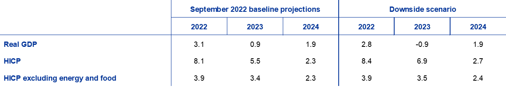
The scenario assumes that the war in Ukraine is very protracted, implying persistent geopolitical tensions. It is assumed that all sanction regimes would be kept in place, resulting in larger and longer-lasting shocks to the euro area. The scenario features a rise in uncertainty, which translates into a substantial adjustment of corporate bond spreads and equity markets and a deterioration in bank lending conditions, both domestically and globally.
In contrast to the baseline projections, the scenario assumes no substitution possibilities for gas supplies and less than full substitution possibilities for oil, the absence of a coordinated response to energy shortages and unusually cold winter weather that would trigger higher energy demand. The September 2022 baseline projections assume substantial substitution of Russian gas through alternative suppliers, no shortages of oil, full implementation of the EU-wide plan to reduce gas consumption and normal winter weather conditions. The downside scenario’s tighter energy supply conditions, which only rebalance in the medium term, in combination with limited demand adjustments, in part owing to the assumed harsh winter weather, would lead to even higher energy prices than those underlying the baseline projections, but also to some need to ration the energy used as an input in production. Countries dependent on Russian gas and oil supplies would then need to implement production cuts.
Energy and food commodity prices are assumed to increase substantially owing to severe supply disruptions. The complete cut-off of Russian gas supplies to Europe, which are assumed not to return to the market during the projection horizon, pushes gas prices sharply higher (53% above the baseline for the entire horizon) amid a very tight European gas market (Table B). The scenario also assumes that oil flows from Russia to the EU are abruptly disrupted from the fourth quarter of 2022 once the oil embargo comes into effect. An assumed limited ability of Russia to redirect oil to global markets via non-sanctioning countries results in a cut in global supply, causing oil prices to spike 60% above the baseline assumptions at the end of this year. Oil prices would then gradually decline from the third quarter of 2023 as the oil market rebalances and would stabilise at 38% above the baseline in 2024. The other members of the OPEC+ group of countries are assumed not to offset the crude oil shortfall from Russia. Regarding food commodities, the scenario assumes a cut of about 30% in Russian and Ukrainian exports of grain and maize. Rising energy costs and fertiliser prices push global food prices up further. The food shock lasts throughout 2023, and the shortfall is then only gradually compensated by other supplies, resulting in international food commodity prices being 24% above the baseline assumptions in the first quarter of 2023 and 33% higher in 2024.
Table B
Assumptions for the downside scenario
(annual percentage deviations from baseline levels, unless otherwise indicated)
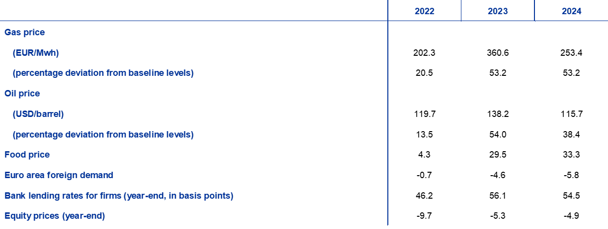
World (excluding the euro area) activity and trade would be negatively affected, weighing strongly on euro area foreign demand. In the downside scenario, world GDP (excluding the euro area) would be lower relative to the September 2022 baseline levels, by 0.2% in 2022 and by 1.3% in 2023. A longer and more intense war and any additional sanctions kept in place until 2024, coupled with higher commodity prices, would be major contributors to the fall in world GDP relative to the baseline. Furthermore, larger disruptions to trade and to global value chains are the main drivers behind the scenario’s effects on euro area foreign demand, which would be lower by 0.7% in 2022 and by 4.6% in 2023 compared with the baseline. Uncertainty and financial factors add additional downward drag.
Higher domestic economic uncertainty would imply a significant repricing of market instruments and a deterioration in bank lending conditions. The scenario assumes a renewed increase in uncertainty between September and December 2022, reflecting the continuing intense conflict and deterioration in energy supply. This pushes up volatility in financial markets, which would negatively affect business, consumer and financial confidence. Equity prices drop by around 10% and banks would increase lending rates further, by about 50 basis points, to compensate for their increased funding costs as well as expected losses on loan portfolios.
The downside scenario would imply weaker average euro area economic growth in 2022 and a contraction in 2023, followed by a strong, but incomplete, rebound in 2024. The effects of production disruptions are based on an assessment of the scope for energy substitution in the economy,[9] while the further macroeconomic effects of the overall scenario have been evaluated using the ECB-BASE model.[10] Compared with the baseline, euro area real GDP growth would be lower in the downside scenario by 0.3 percentage points in 2022 and by 1.8 percentage points in 2023, before stabilising in 2024 at the baseline growth rate (Chart). Annual average growth in 2022 would still be positive, but GDP would decline sharply in the final quarter of 2022 and the first quarter of 2023. One of the key drivers of the adverse GDP profile is the disruption of production owing to energy supply shortages. As the impact of supply disruptions eases on account of a gradual substitution of energy inputs and economic adjustment, the recession would be followed by moderate GDP growth, although the level of GDP in the downside scenario remains below the baseline at the end of the horizon.
Large commodity price increases imply strong upward price pressures, prolonging the expected period of elevated inflation. The impact of higher prices for energy and food commodities, as well as the energy-related production cuts, would result in considerably higher headline inflation than in the baseline in 2022 and especially in 2023 (Chart). The more long-lasting upward price pressure envisaged in this scenario are to a large extent due to the persistently higher commodity price paths implied by the prolonged conflict, though it would be tempered by the dampening impact of the decline in demand later in the horizon.
Chart
Impact on real GDP growth and HICP inflation in the euro area in the downside scenario compared with the September 2022 baseline projections
(deviations from the September 2022 baseline projections, in percentage points)
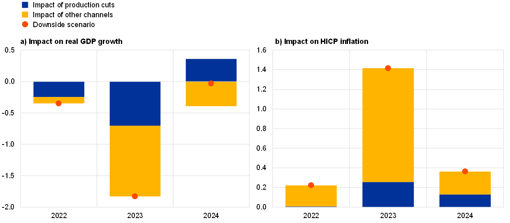
This analysis is surrounded by a considerable degree of uncertainty with respect to the energy price developments, the possibilities for substitution and the responsiveness of the economy’s energy demand. Some core features of the downside scenario are surrounded by high uncertainty. Commodity prices, especially gas prices, in Europe are highly volatile at the current juncture (see Box 4). Moreover, the effects of production disruptions generated by energy quantity restrictions (rationing) crucially depend on the extent to which Russian gas is substituted with alternative sources of gas, the extent to which gas can be substituted with other inputs in production processes and on how the economy adjusts to the price environment. The scenario also does not take into account possible monetary policy responses and governments’ reactions which could stabilise production, shield lower-income households and/or mitigate the pass-through of higher commodity prices into consumer prices.
2 Fiscal outlook
Some further fiscal stimulus measures have been incorporated into the baseline compared with the June 2022 projections. This mainly reflects governments’ further reaction to soaring energy prices and the high cost of living since Russia’s invasion of Ukraine, amounting to about 0.4 percentage points of GDP in 2022. With these revisions, the total fiscal stimulus related to energy and the war in Ukraine incorporated into the projections rises to 1.4% of GDP in 2022.[11] About one-quarter of this fiscal stimulus – particularly the spending on increased defence capabilities and refugee support – is projected to continue having a budget impact in 2023 and 2024. These additional measures in 2022 and their partial reversal in 2023 broadly explain the revisions to the fiscal stance compared with the June 2022 projections (Table 1). For 2022, however, non-discretionary factors, stemming from better than expected revenue collections in the first half of 2022 which exceed the levels suggested by macroeconomic tax bases, partly compensate for the additional stimulus. The fiscal stance is also affected by higher nominal government consumption and transfers, in part related to adjustments in public wages and especially pensions, as well as somewhat lower public investment than foreseen in the June projections. Overall, after the strong expansion in 2020 and some tightening in 2021, the euro area fiscal stance adjusted for NGEU grants is projected to continue to tighten somewhat, especially in 2023, mainly reflecting the reversal of the COVID-19 crisis support and the downsizing of the energy support. In 2024 the fiscal stance is projected to be neutral.
The euro area budget balance is projected to improve steadily in the period to 2024, but by less than foreseen in the June 2022 projections. Over the projection horizon the improvement in the budget balance is seen to be driven primarily by the cyclical component, followed by the lower cyclically adjusted primary deficit. At the end of the horizon the budget balance is projected to be -2.7% of GDP and thus to remain well below the pre-pandemic level (-0.7%). After the sharp increase in 2020, euro area aggregate government debt is expected to decline over the entire projection horizon, reaching about 90% of GDP in 2024, which is still above its pre-pandemic level (84%). This decline is mainly due to favourable interest rate-growth differentials on account of the nominal GDP growth, which more than offset the persisting, albeit decreasing, primary deficits. Compared with the June 2022 projections, the budget balance path has been revised downwards over 2023-24, mainly on account of the deterioration in the cyclical component. These factors have also been the main contributors to the upward revision to the euro area aggregate debt ratio by 2024.
3 Prices and costs
HICP inflation is projected to rise somewhat further for the remainder of the year from the already very high levels reached in the summer (Chart 3). The surge in headline inflation in 2022 reflects a large increase in consumer energy prices (only partly mitigated by government measures) and food prices, a strong rise in non-energy industrial goods prices as the impact from supply chain disruptions persists, and upward effects on services prices from the reopening of the contact-intensive part of the services sector. These broad-based increases mirror an extraordinary rise in input costs reflected in producer prices coupled with still rather robust demand until the middle of 2022. HICP inflation is expected to start gradually declining in the course of the last quarter of 2022 mainly owing to downward base effects in the energy component, predominantly present for the fuels component. From the beginning of 2023 electricity prices and, in particular, gas prices are also expected to contribute to the moderation in inflation. The differences in the persistence of inflation across energy products reflect different profiles for oil, wholesale electricity and gas futures prices (see Box 1), the lower frequency of price adjustments for electricity and gas than for fuels, and diverse fiscal measures across countries. To account for high uncertainty linked to the recent extreme volatility particularly in gas and electricity wholesale prices, Box 4 provides a sensitivity analysis for HICP inflation based on various underlying assumptions for energy commodities. Following a further rise in the already high inflation rates for food in the course of 2022 owing to high energy input costs, and high prices for fertilisers and for international and euro area food commodities, food inflation is expected to start moderating in 2023 as these cost pressures subside. HICP inflation excluding energy and food is expected to remain elevated for the rest of the year at the level reached in the third quarter, given indirect effects from energy prices as well as impacts from supply bottlenecks and the reopening of the economy.
Chart 3
Euro area HICP
(annual percentage changes)
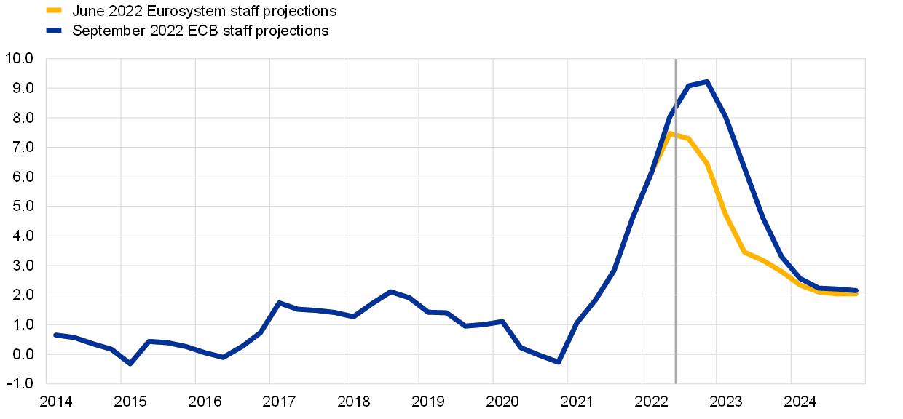
Note: The vertical line indicates the start of the current projection horizon.
Headline inflation is expected to decline from an average of 8.1% in 2022 to 5.5% in 2023 and 2.3% in 2024. This profile for headline inflation reflects declines in the annual rates of change for all main components to varying degrees. The decline in energy inflation described above is expected to continue throughout 2023 and 2024 in line with the assumptions that oil and gas prices follow the downward sloping profile of their respective futures curves. The impact of these assumptions more than offsets some upward impact from the reversal of temporary energy-related fiscal measures and from national climate change measures which are envisaged in 2023-24 in some countries. Energy inflation is expected to make only a very small contribution to headline inflation in 2024. Following the rise in 2022 food inflation is also expected to moderate, driven by downward base effects in mid-2023 and as the upward price pressures from the surge in input costs related to high energy, fertiliser and food commodity prices ease. Reflecting the lagged impact of input costs on consumer prices, in particular for gas, food inflation is expected to remain well above its historical average in 2024. HICP inflation excluding energy and food is projected to moderate only in the course of 2023, averaging 3.4% over the year, and 2.3% in 2024. The decline should follow the unwinding of upward impacts from supply bottlenecks and the effects of the reopening of the economy, coupled with lagged effects from the slowdown in growth and some easing of indirect effects from higher energy prices. At the same time, the still somewhat elevated level in 2024 reflects lagged impacts from the depreciation of the euro effective exchange rate, tight labour markets and some second-round effects on wages. Wages are expected to support underlying inflation throughout the projection horizon, while profit margins should buffer some of the higher wage costs in 2023 but are projected to then recoup some losses in 2024.
Compensation per employee is projected to grow by 4.0% in 2022 and 4.8% in 2023 before falling back to 4.0% in 2024. The figure for 2022 is pushed up by the effect of job retention schemes. Adjusting for this, the expected increase in wage growth between 2022 and 2023 is even more pronounced and reflects robust labour markets, increases in minimum wages in some countries, and some effects of compensation for the high rates of inflation. Growth in unit labour costs is expected to significantly contribute to domestic inflation in 2023, but less so in 2024 owing to both the moderation in wage growth and the pick-up in productivity growth.
Import price pressures are expected to be significantly stronger than domestic price pressures in 2022 but to drop sharply in the later years of the horizon. Strong import price growth in 2022 largely reflects increases in commodity prices, especially energy, and an increase in imported inputs related to supply shortages. In the following two years it is expected to significantly decline, in part as energy prices moderate.
Compared with the June 2022 Eurosystem staff macroeconomic projections, the outlook for HICP inflation has been revised upwards by 1.3 percentage points for 2022, by 2.0 percentage points for 2023 and by 0.2 percentage points for 2024. The upward revisions relate by and large to all main components, but the revision for 2024 is to a large extent due to the energy component. They reflect recent upward data surprises, stronger and more persistent upward pressures from energy prices (oil and gas) and related input cost increases for the food sector, stronger wage growth and a depreciation of the euro effective exchange rate. These factors far outweigh the negative impact of the weaker growth outlook.
Box 4
Sensitivity analysis: alternative energy price paths
Given the significant uncertainty surrounding future energy price developments, various sensitivity analyses assess the mechanical implications for the baseline projections of alternative paths. This Box first considers the risks of exceptionally strong movements in energy commodity prices, mirroring developments seen in the recent past, to the short-term inflation outlook. Thereafter, the impact of selected alternative paths for energy prices on real GDP growth and HICP inflation throughout the entire projection horizon are assessed.
Changes in oil and gas commodity prices in line with recent gyrations suggest high uncertainty about the very short-term inflation outlook. The current high volatility in oil and particularly gas prices has strongly increased the uncertainty surrounding the inflation outlook in the very short term. Such strong short-term volatility is usually not captured by the option-implied distribution around futures (see below). To assess such short-term sensitivity, one possibility is to consider an upper and lower range for short-term variations in oil and gas prices and then derive forecasts for near-term inflation based on this range. In this sensitivity analysis such a range is derived from the maximum average monthly increase and decrease registered in oil and gas markets from January 2021 to August 2022. This is then fed into the set of energy equations (for fuels, electricity and gas) used by ECB staff for forecasting short-term inflation. During this period the maximum average monthly increase in the level of oil prices and of wholesale gas prices was €22.7 per barrel for oil and €63.9 per MWh for gas. Assuming a similar increase in September 2022 from the assumptions used in the September 2022 projections (maintained until the end of the year) would raise headline inflation by 0.2 percentage points in the third quarter of 2022 and by 1.0 percentage points in the fourth quarter (to rates of 9.3% and 10.2% respectively; see Chart). A decrease corresponding to the maximum decrease for oil prices in euro (€17.8) and wholesale gas prices in euro (€28.0) would have an impact of -0.2 percentage points in the third quarter of 2022 and -0.4 percentage points in the fourth quarter (to stand at rates of 8.9% and 8.8% respectively).
Chart
Alternative paths of HICP inflation in the short term based on recently observed volatility in oil and gas markets
(annual percentage changes)
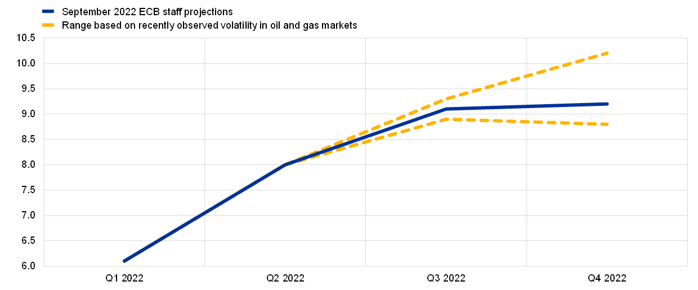
Looking at the entire projection horizon, alternative paths for energy prices are derived from option-implied oil prices and a constant price path. In this sensitivity analysis, a synthetic energy price index is used, which combines both oil and gas futures prices. Alternative downside and upside paths are derived from the 25th and 75th percentiles of the option-implied neutral densities for the oil price on 22 August 2022 (the cut-off date for the technical assumptions). In the absence of similar distributions for gas prices, they are derived from the 25th and 75th percentiles of a distribution based on recent forecast errors of gas price futures. In addition, a constant price assumption is considered for both oil and gas prices.
The impacts of these alternative paths are assessed using a range of Eurosystem and ECB staff macroeconomic models used in the projections. The average impacts on real GDP growth and inflation across these models are shown in the Table below. The results suggest that the highest upward deviations from the baseline HICP inflation projections are for the 75th percentiles for the first two years of the horizon and for the constant oil and gas prices for 2024. In the scenario based on the constant path, HICP inflation stands at 2.9% in 2024. By contrast, in the scenario based on the 25th percentile, HICP inflation declines to 1.6% in 2024. Impacts on real GDP growth are -0.1 percentage points in both 2023 and 2024 for the 75th percentile and the constant price assumption, while the 25th percentile path would imply higher growth of 0.1 percentage points in 2023 and 0.2 percentage points in 2024.
Table
Impacts of alternative energy price paths
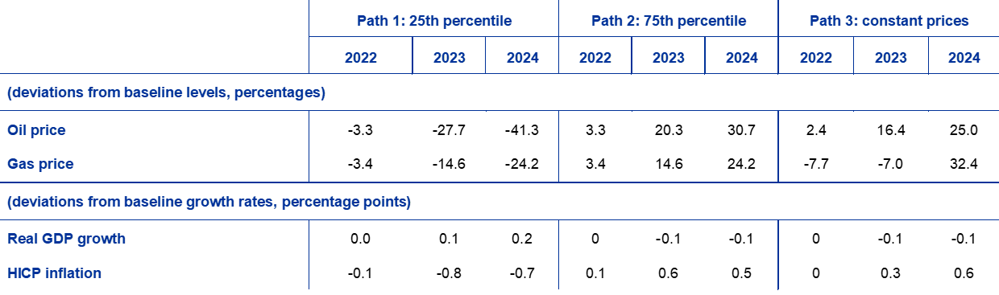
Notes: The 25th and 75th percentiles refer to the option-implied neutral densities for the oil price as at 22 August 2022 and in the case of gas prices to a distribution based on recent forecast errors of gas price futures. The constant oil and gas prices take the respective value as at the same date. The macroeconomic impacts are reported as averages of a number of ECB and Eurosystem staff macroeconomic models.
Box 5
Forecasts by other institutions
Forecasts for the euro area are available from both international organisations and private sector institutions. However, these forecasts are not directly comparable with one another or with the ECB staff macroeconomic projections, as these were finalised at different points in time. Additionally, these projections use different methods to derive assumptions for fiscal, financial and external variables, including oil and other commodity prices. Finally, there are differences in working day adjustment methods across different forecasts.
Table
Comparison of recent forecasts for euro area real GDP growth and HICP inflation
(annual percentage changes)
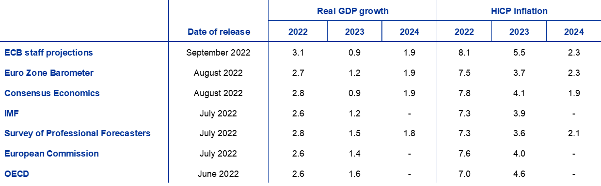
Sources: MJEconomics for the Euro Zone Barometer, 18 August 2022 (data for 2024 are taken from the July 2022 survey); Consensus Economics Forecasts, 11 August 2022 (data for 2024 are taken from the July 2022 survey); IMF World Economic Outlook, 26 July 2022; ECB Survey of Professional Forecasters, for the third quarter of 2022, 22 July 2022; European Commission Summer 2022 (Interim) Economic Forecast, 14 July 2022; OECD June 2022 Economic Outlook 111, 8 June 2022.
Notes: The ECB staff macroeconomic projections report working day-adjusted annual growth rates, whereas the European Commission and the IMF report annual growth rates that are not adjusted for the number of working days per annum. Other forecasts do not specify whether they report working day-adjusted or non-working day-adjusted data. Historical data may differ from the latest Eurostat publications due to data releases after the cut-off date for the projections.
The September 2022 ECB staff projections are above other forecasts for GDP growth for 2022 but below most of them for 2023, while for inflation they are above most other forecasts over the entire horizon. The ECB staff projections for growth are slightly above the range of other forecasts for 2022 (possibly owing to the inclusion of the latest upward data revisions for the first half of the year) but below most other forecasts for 2023, and are in line with other forecasts for 2024. As regards inflation, the ECB staff projection is higher than most other forecasts over the entire projection horizon, most significantly in 2023, likely owing to the more recent cut-off date and more up-to-date technical assumptions, which suggest stronger and more persistent price pressures and hence resulting higher inflation.
© European Central Bank, 2022
Postal address 60640 Frankfurt am Main, Germany
Telephone +49 69 1344 0
Website www.ecb.europa.eu
All rights reserved. Reproduction for educational and non-commercial purposes is permitted provided that the source is acknowledged.
For specific terminology please refer to the ECB glossary (available in English only).
PDF ISSN 2529-4466, QB-CE-22-002-EN-N
HTML ISSN 2529-4466, QB-CE-22-002-EN-Q
The cut-off date for technical assumptions, such as those for oil prices and exchange rates, was 22 August 2022. The projections for the global economy were finalised on 15 August and the macroeconomic projections for the euro area were finalised on 25 August 2022. The current projection exercise covers the period 2022-24. Projections over such a long horizon are subject to very high uncertainty, and this should be borne in mind when interpreting them. See the article entitled “An assessment of Eurosystem staff macroeconomic projections” in the May 2013 issue of the ECB’s Monthly Bulletin. See http://www.ecb.europa.eu/pub/projections/html/index.en.html for an accessible version of the data underlying selected tables and charts. A full database of past ECB and Eurosystem staff macroeconomic projections is available at https://sdw.ecb.europa.eu/browseSelection.do?node=5275746.
After the cut-off date of 22 August 2022, gas flows via the Nord Stream 1 pipeline were indefinitely suspended, significantly reducing the gas flows from Russia to the euro area. This poses a downside risk to the assumptions on gas supply underlying the ECB staff baseline projections in case the loss of gas via this pipeline cannot be substituted by alternative supplies. This footnote has been modified for clarity following the initial publication of this report on 8 September 2022.
Derogations under this agreement imply that the actual savings will vary by country and will therefore be notably smaller at the euro area-wide level. Full exemptions were agreed for Member States that are not connected to the EU gas grid (Ireland, Cyprus and Malta), and partial exemptions for countries with limited connections to other Member States (Belgium, Greece, Spain, Italy and Portugal). See the Council regulation on coordinated demand-reduction measures for gas, of 4 August 2022.
Although Italy depended on Russian gas to a similar extent as Germany before the invasion of Ukraine, gas storage levels over the winter are expected to be less critical in Italy, owing to the successful substitution with Algerian gas which is assumed to continue.
The fiscal projections incorporate only those discretionary measures that, at the time of the cut-off date, have already been approved by parliaments or that have been endorsed by governments and that are specified in detail and likely to pass the legislative process.
Savings accumulated during the pandemic were concentrated especially in wealthier households. See Dossche, M., Georgarakos, D., Kolndrekaj, A. and Tavares, F., “Household saving during the COVID-19 pandemic and implications for the recovery of consumption”, Economic Bulletin, Issue 5, ECB, 2022.
The assumption for euro area ten-year nominal government bond yields is based on the weighted average of countries’ ten-year benchmark bond yields, weighted by annual GDP figures and extended by the forward path derived from the ECB’s euro area all-bonds ten-year par yield, with the initial discrepancy between the two series kept constant over the projection horizon. The spreads between country-specific government bond yields and the corresponding euro area average are assumed to be constant over the projection horizon.
Tobin’s Q is the value of an existing house divided by its construction cost.
The elasticity of substitution for the production cuts in the downside scenario is obtained by using the constant elasticity of substitution (CES) production function approach in Bachmann, R., Baqaee, D., Bayer, C., Kuhn, M., Löschel, A., Moll, B., Peichl, A., Pittel, K. and Schularick, M., “What If? The Economic Effects for Germany of a Stop of Energy Imports from Russia”, ECONtribute Policy Brief, No 28, March 2022, as extended in Borin, A., Conteduca, F.P., Di Stefano, E., Gunnella, V., Mancini, M. and Panon, L., “Quantitative assessment of the economic impact of the trade disruptions following the Russian invasion of Ukraine”, Occasional Papers, No 700, Banca d’Italia, June 2022. Such elasticity relates to the possibility to substitute imported energy with domestic energy resources or, more generally, the degree to which agents are willing to reallocate their expenditure from imported energy to other products.
Angelini, E., Bokan, N., Christoffel, K., Ciccarelli, M. and Zimic, S., “Introducing ECB-BASE: The blueprint of the new ECB semi-structural model for the euro area”, Working Paper Series, No 2315, ECB, September 2019.
Netting out the energy-related compensatory measures approved by governments before 24 February, the total support in response to the war amounts to 1.2% of GDP in 2022. This is estimated to have a 0.5 percentage point impact on growth and a -0.6 percentage point impact on inflation in 2022, which is slightly larger than foreseen in the June projections. In 2023, on account of the timing and composition of measures, the impact on growth is estimated to fade out, while the impact on inflation is seen to be broadly reversed.
-
8 September 2022